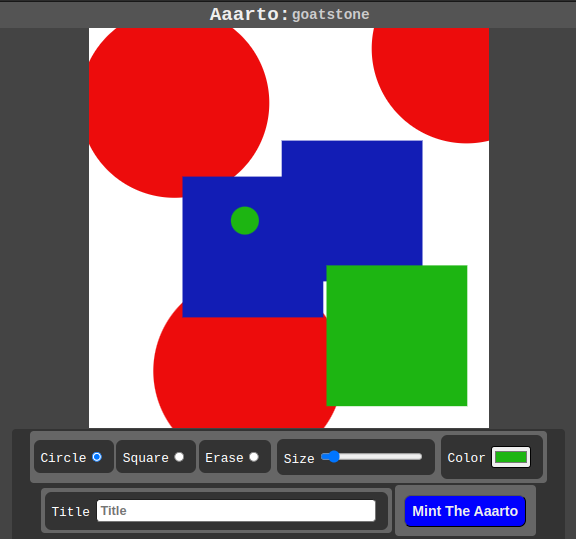
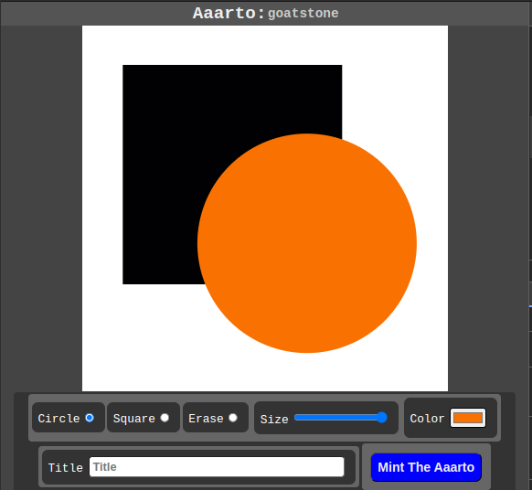

Aaarto is an online drawing program that enables the minting of the artwork as a Non-fungible token, an NFT. Aaartos are minted on the Polygon network.
The drawing application aspect of Aaarto enables the creation of art by the adding of circles and squares of various sizes and colors onto a canvas area. Tools to set the shapes' size and color are offered to the user. An erase tool enables the deletion of the shapes applied to the canvas. There is a text area in which the user can give the artwork a name.
At any point in the creation of the art, the user can create an NFT of the art.
With the Aaarto program, the process of creating the art and the characteristics of the NFT are tightly connected. The characteristics of the NFT are controlled by a single creation mechanism. Not just any digital asset is minted. The connection between the creation process and the NFT overcomes the generality of the uploading of any digital data.
The artwork generated by Aaarto is in the SVG format. SVG data is stored as tags (tags that give information about the content of the file). This data gives insight into the content of the artwork. This insight into the content and structure of the artwork is preferable to a series of pixels. A series of pixel data has no inherent way of indicating what the content of the artwork is.
Aaarto is designed, developed and hosted by Goatstone